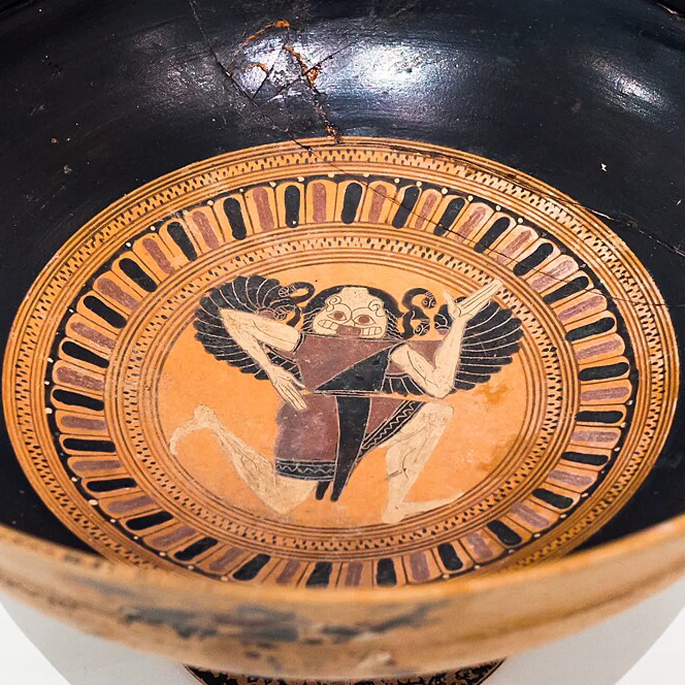

Szene 1 von 9
ΑHerkunft
„Nur Medusa war sterblich.“
Am Rand der Welt lebten drei Schwestern. Zwei von ihnen konnte nichts töten.
Medusa war keine Einzelgängerin. Sie war eine von drei Gorgonen – Stheno, Euryale und Medusa –, Töchter von Phorkys und Keto.12 Zur selben Familie gehörten die Graien, drei Schwestern, die schon als alte Frauen zur Welt kamen.3
Ein einziger Unterschied entschied alles: Stheno und Euryale waren unsterblich, Medusa nicht. Nur sie konnte sterben – und genau deshalb wurde Perseus nach ihrem Kopf geschickt.4
Die Familie
„Nur Medusa war sterblich.“nach Apollodor, Bibliotheke 2.4.2
Stammbaum: Phorkys und Keto sind die Eltern der Graien und der drei Gorgonen. Stheno („die Mächtige“) und Euryale („die weit Springende“) sind unsterblich, Medusa („die Herrscherin“) ist sterblich. Aus Medusas Blut entspringen Pegasus und Chrysaor; der Vater ist Poseidon.
Wie sah eine Gorgone aus?
- Schuppen
- Hauer
- Bronzehände
- Goldene Flügel
Apollodor beschreibt die Gorgonen so: Köpfe, umwunden von Drachenschuppen, Hauer wie von Wildschweinen, Hände aus Bronze und goldene Flügel, mit denen sie fliegen konnten.5
Von einer schönen Frau ist bei ihm keine Rede. Die Gorgone ist hier ein Ungeheuer von Anfang an – kein Mensch, den eine Strafe verwandelt hat. Diese andere Geschichte erzählt erst Ovid.

Am Rand der Welt
Hesiod verlegt die Gorgonen in den äußersten Westen, jenseits des Okeanos, nahe bei der Nacht und den Hesperiden.6 Andere antike Autoren suchten sie im fernen Osten oder in Libyen.7 Einig sind sie sich nur in einem: Die Gorgonen wohnen dort, wo die bekannte Welt aufhört.
Die Graien
Die Graien kamen schon alt zur Welt und teilten sich ein einziges Auge und einen einzigen Zahn.8 Wer das Auge stahl, während es von Hand zu Hand ging, machte sie hilflos – genau das wird Perseus tun.
Die GraienKI-Bild s1-graien folgt · Prompt in der Prompt-Bibliothek